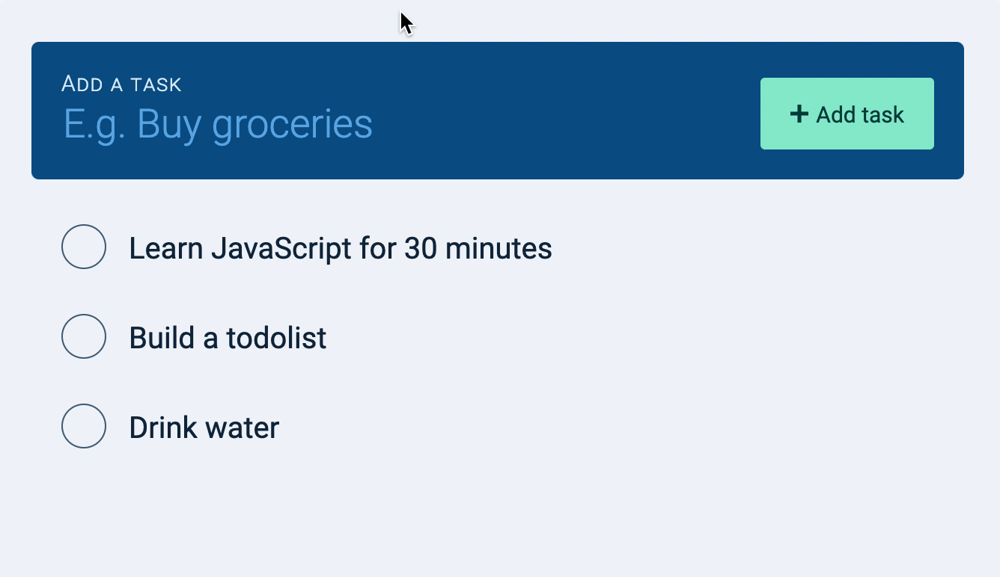
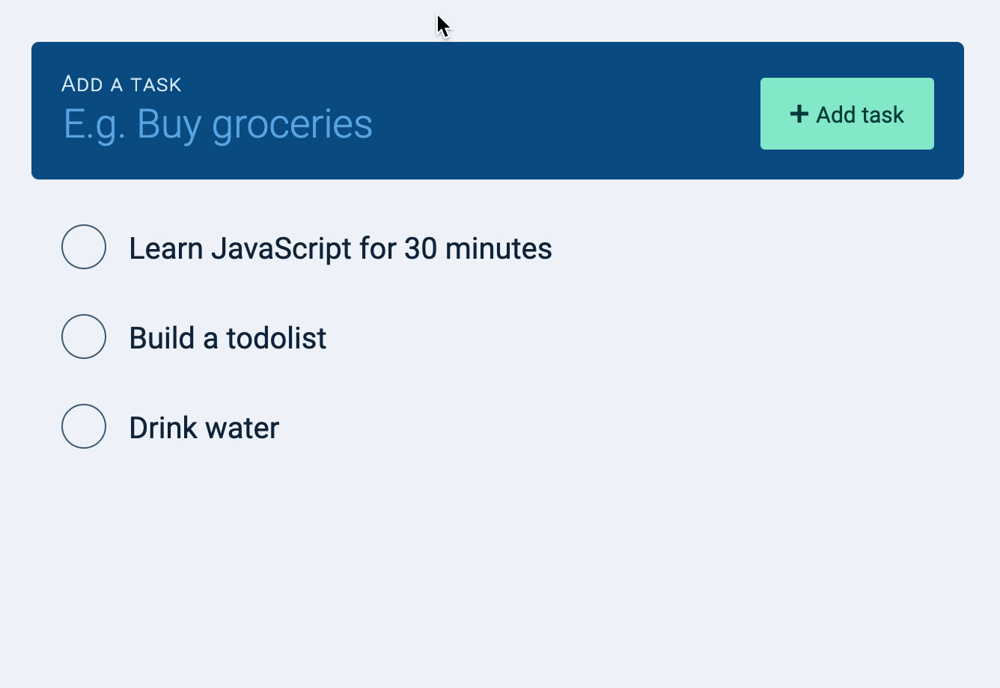
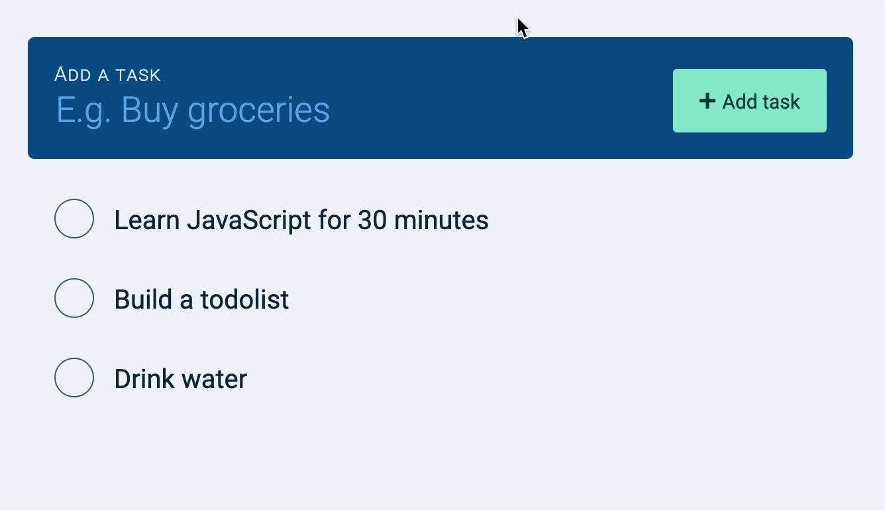
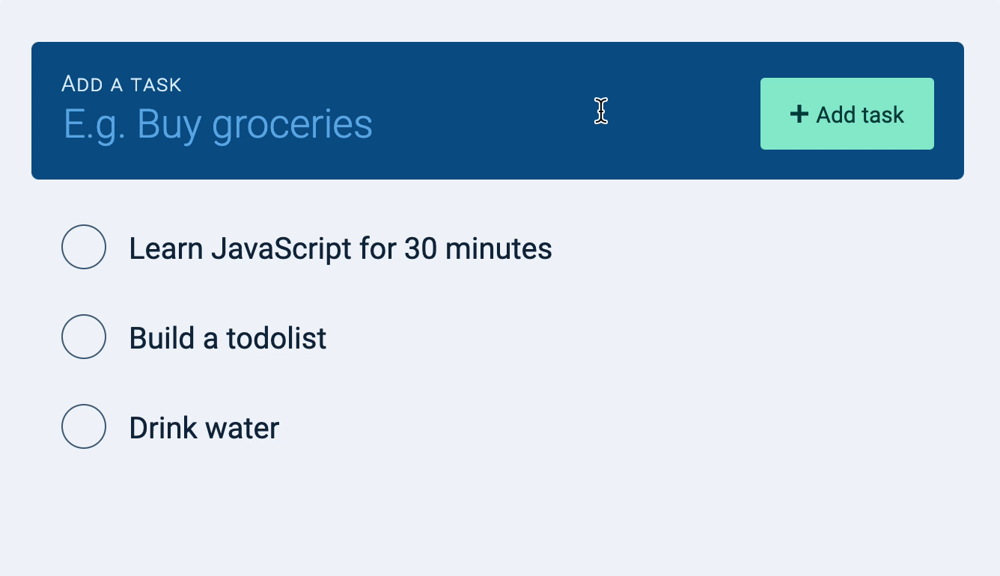

After the task gets added to the DOM, we want to clear the new task field and bring the focus back to the field.
todolist.addEventListener('submit', event => {
// ...
zlFetch(/* ... */)
.then(response => {
// Append task to DOM...
// Clear the new task field
newTaskField.value = ''
// Bring focus back to input field
newTaskField.focus()
})
})
We also want to prevent users from adding an empty task.
todolist.addEventListener('submit', event => {
event.preventDefault()
// Get value of task
const newTaskField = todolist.querySelector('input')
const inputValue = newTaskField.value.trim()
// Prevent adding of empty task
if (!inputValue) return
// Sends POST request...
})
Here’s what you’ll see.

This is pretty good, but did you notice a delay in adding the task? This delay introduces a huge problem.
Problem with the delay
Users experience nothing after submitting the form. They may think the website hanged. When they think the website hanged, they may try to click a few more times.
If they click a few more times, we create duplicated tasks:

Fixing the delay
We can do two things to fix this problem:
Telling users we’re adding a task
Preventing users from creating tasks as we wait for a response from the server
Telling users we’re adding a task
First, we want to let users know we’re adding a task. This is traditionally done with a spinner. But you don’t need a spinner to do this.
A simple way is to change the words “Add task” to “Adding task” when we send the POST request.
Then, we change “Adding task” back to “Add task” when we get a response from the API.
todolist.addEventListener('submit', event => {
// ...
// Give indication that we're adding a task
const buttonTextElement = newTaskButton.querySelector('span')
buttonTextElement.textContent = 'Adding task...'
// Sends POST request
zlFetch(/* ... */)
.then(response => {/* ... */ })
.catch(error => console.error(error))
.finally(_ => {
// Change button text back to original text
buttonTextElement.textContent = 'Add task'
})
})
Note: If browser support isn’t good, you can substitute finally with then.

Preventing users from entering duplicated tasks
We can disable the submit button to prevent users from adding tasks. A form with a disabled submit button doesn’t trigger a submit event. This is how we prevent users from adding duplicated tasks.
We can disable the submit button by adding a disabled attribute.
When the task is added, we enable the button again.
todolist.addEventListener('submit', event => {
// ...
// Sends POST request
zlFetch(/* ... */)
.then(response => {/* ... */ })
.catch(error => console.error(error))
.finally(_ => {
// Enables button
newTaskButton.removeAttribute('disabled')
// Change button text back to original text
buttonTextElement.textContent = 'Add task'
})
})

There’s one more thing we can do. (And it’s something more advanced).
Removing the delay
We can’t speed up the round-trip from the browser to the database and back (browser -> server -> database -> server -> browser). That’s a limitation we have to accept. But we can give users the illusion that tasks are saved immediately.
We do this by:
Adding the task to the DOM immediately
If the server responds with an error, we remove the task from the DOM
This approach is also known as “Optimistic UI”. This is an advanced concept. We’ll come back and build an optimistic UI after learning to edit and delete tasks.